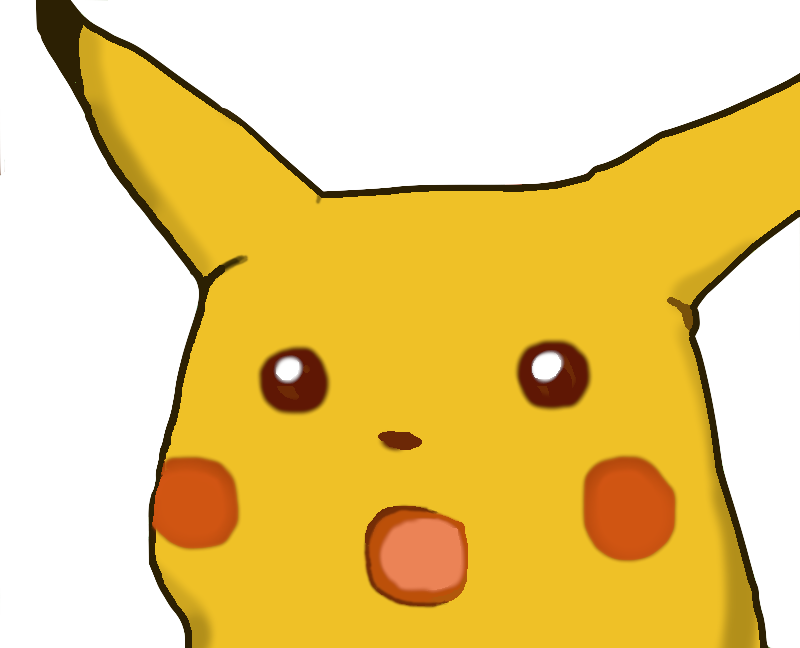
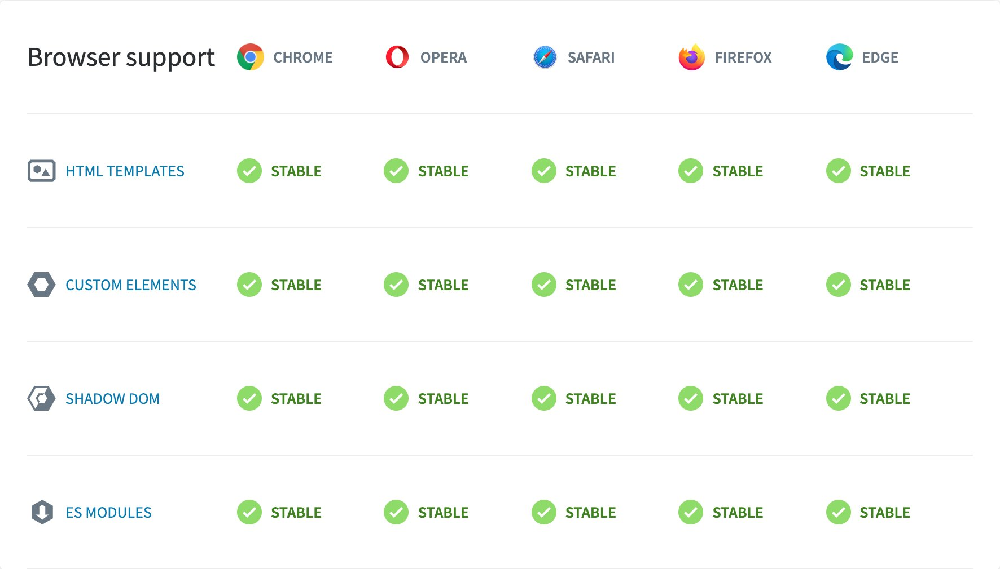
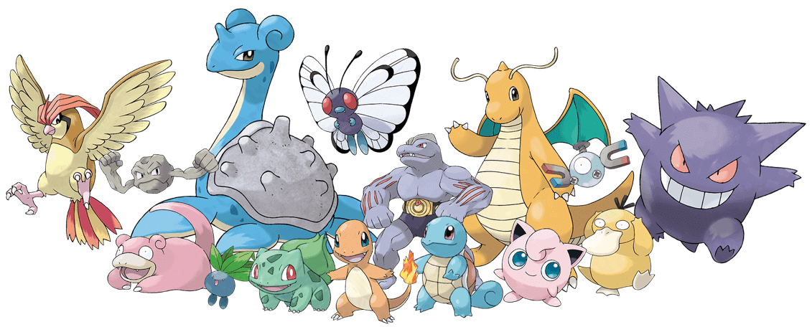
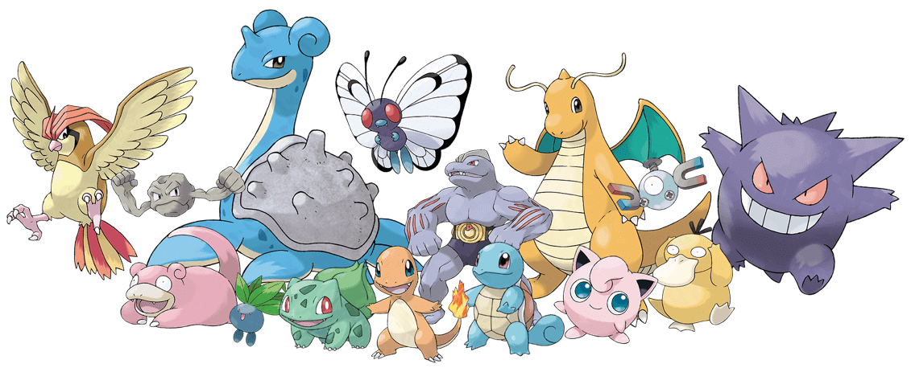
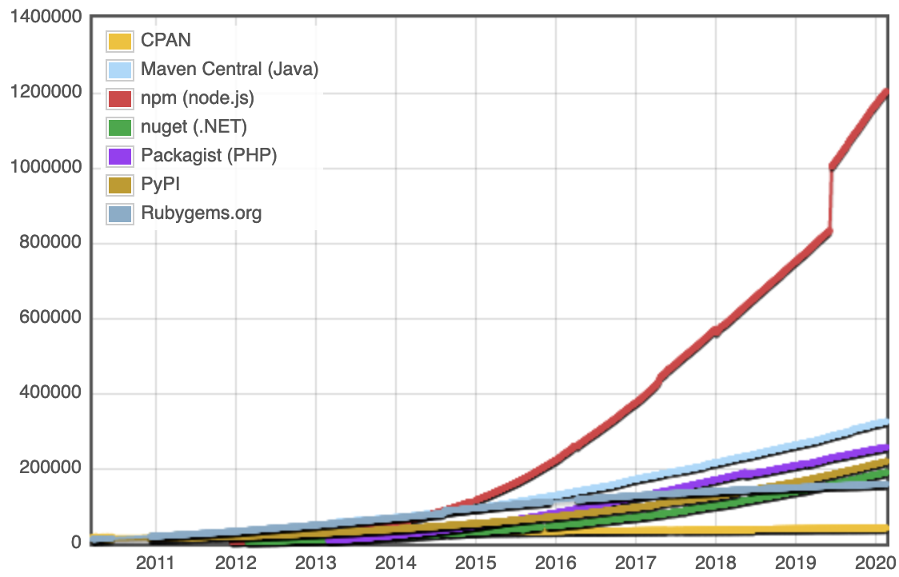
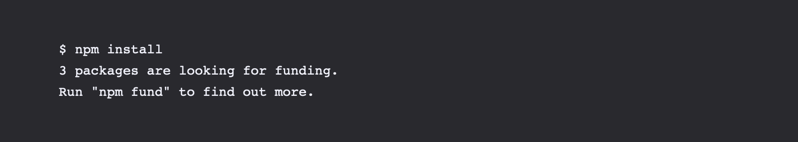
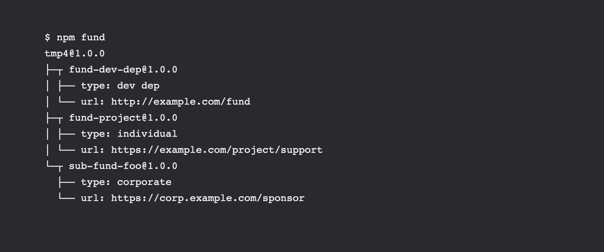

Subiektywny
przegląd front-endów (2020)
Perspektywa... ma znaczenie :)





progressss


46%
adopcji TS-a
import React from 'react';
import ReactDOM from 'react-dom';
const Counter = ({initial}) => {
const [count, setCount] = React.useState(initial);
return (
<div className="centered">
<button onClick={() => setCount(count - 1)}>
-
</button>
<span>{count}</span>
<button onClick={() => setCount(count + 1)}>
+
</button>
</div>
);
}
ReactDOM.render(
<Counter initial={10} />,
document.getElementById('react-app')
);
import 'zone.js'; import 'core-js/es/reflect'; import 'core-js/features/reflect';
import { BrowserModule } from '@angular/platform-browser';
import { platformBrowserDynamic } from '@angular/platform-browser-dynamic';
import { NgModule, Component, Input } from '@angular/core';
@Component({
selector: 'angular-counter',
template: `
<div class="centered">
<button (click)="setCount(count - 1)">
-
</button>
<span>{{count}}</span>
<button (click)="setCount(count + 1)">
+
</button>
</div>
`
})
class Counter {
@Input() count: number;
setCount(count: number) {
this.count = count;
}
}
@Component({ selector: 'angular-app', template: '<angular-counter [count]="10">' }) class App { }
@NgModule({
imports: [ BrowserModule ],
declarations: [ App, Counter ],
bootstrap: [ App ]
})
class AppModule { }
platformBrowserDynamic().bootstrapModule(AppModule);
import Vue from 'vue';
const Counter = Vue.component('vue-counter', {
props: { initial: Number },
data: function() {
return {
count: this.initial
}
},
template: `
<div class="centered">
<button @click="--count">
-
</button>
<span>{{count}}</span>
<button @click="++count">
+
</button>
</div>
`
});
new Vue({
el: '#vue-app',
components: { Counter },
template: '<vue-counter :initial="10" />'
})
Co brać? "Pewniak"?

| PRZED | PO |
|---|---|

|

|

Po prostu fajniejsze API?

Co ja bym wybrał?
- Vanilla JS (Web Components)

Web Components
class FullWebComp extends HTMLElement { constructor() { super();this.attachShadow({mode: 'closed'}) .appendChild(document.getElementById('h2-template') .content .cloneNode(true)); } }customElements.define('full-web-comp', FullWebComp);
perfect template: style + h2
👀
CanIUse?



| kiedyś | teraz |

|
 

|
97%
kodu nowoczesnych aplikacji pochodzi z npmMILION
średnio ~800 dziennie
Micro-frameworki
left-pad w
2016?
- 20.08 - reklamy w linii komend
- 22.08 - kethinov/no-cli-ads
- 26.08 - mkg20001/npm-adblock
- 29.08 - npm bans terminal ads
07.11 - npm fund


95%
kodu to front przy podejściu serverlessFront-end for the win?
Dziękuję